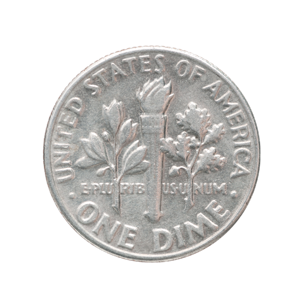
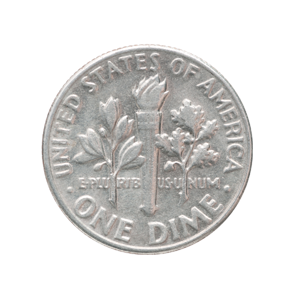

Фиалка - символ пробуждения природы.
На монете изображена фиалка, выполненная в цвете, c использованием техники перегородчатой эмали, по верхнему канту надпись: FROWERS OF THE WORLD, THE PANSY. В нижней части надпись — год чеканки 2009.
Монета укомплектована подарочным демонстрационным футляром.
Цена: 3 680 ₽